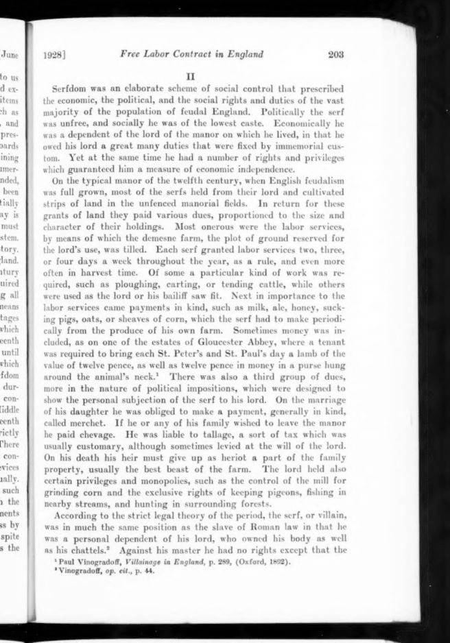

Black, 1928: o balanço da ajuda à agricultura americana
Leitura: 9 min
Black mede a crise agrícola americana desde 1920, monta a cronologia dos projetos de ajuda no Congresso e conclui que boa parte deles serviu para barrar medidas radicais.


Em 3 de maio de 1928, a Câmara dos Representantes aprovou o projeto McNary-Haugen por 204 votos a 121. Em fevereiro de 1927, aprovado nas duas casas, o plano de operações com os excedentes agrícolas tinha sido vetado pelo presidente Coolidge. A votação é o último item da cronologia que John D. Black, da Harvard University, incluiu no artigo do número de junho de 1928 da American Economic Review. O texto tenta traçar o progresso da ajuda à agricultura nos Estados Unidos, relacioná-lo com a sorte da própria agricultura e avaliar as medidas adotadas e propostas.
Black avisa que a análise será tanto política quanto econômica, que as questões não terão solução científica e que o melhor a fazer é expô-las de modo claro e objetivo. O exame do programa McNary-Haugen fica reservado para outro artigo.
Quão funda foi a queda de 1920?
Os preços agrícolas foram os primeiros a quebrar. O índice de preços pagos aos produtores de julho de 1920 ficou 10 pontos abaixo do de junho; os preços não agrícolas no atacado só recuaram em novembro e dezembro. Em dezembro de 1920 o índice agrícola estava em 140. Em 1921, a relação entre preços agrícolas e não agrícolas no atacado chegou a 80, o mínimo do período.
Depois disso, diz Black, os preços não agrícolas caíram e os agrícolas subiram, e a relação voltou a 96 em 1925 e 1927. A medida mais usada no debate público, a relação entre os preços recebidos na fazenda e os preços não agrícolas no atacado, estava em 86 em 1927; ela inclui o efeito dos fretes e das margens dos distribuidores. A relação entre preços recebidos e preços pagos pelos produtores, que inclui também as margens sobre o que o agricultor compra, era 82 em 1926.
A renda do agricultor se recuperou?
Em parte. O aumento do volume físico compensou a perda de poder de compra por unidade: o poder de compra da renda agrícola subiu 19 pontos desde o mínimo de 84, em 1921, mas continuava abaixo dos anos prósperos de 1917 e 1918. As famílias rurais, além disso, gastavam mais. Se aceitassem viver como em 1910–14, diz o autor, pagariam as hipotecas a cerca de 60 por cento do ritmo de antes da guerra; as hipotecas eram em média 133 por cento maiores.
A comparação com a cidade pesa contra o campo. Os ganhos semanais dos operários de fábrica de Nova York em 1927 estavam 27 por cento acima da média de 1919 e 1920, e os lucros das empresas tinham ficado acima de 12 por cento desde 1924. A conclusão de Black é que o demonstrativo anual da agricultura ainda era desfavorável.
Por que o balanço patrimonial era pior?
O balanço, diz o autor, era ainda mais adverso. Black rejeita como absurda a afirmação de que a agricultura perdera vinte bilhões em riqueza desde 1920, porque os valores do censo de 1920 existiam só na cabeça das pessoas, mas mostra perdas reais. Quem comprou terra entre 1918 e 1921 perdeu, tenha ou não perdido a fazenda na execução da hipoteca. Uma participação de 10.000 dólares numa compra de 20.000 em 1920 valia em média só 4.000 em 1927.
A dívida hipotecária das fazendas operadas por proprietários plenos passou de 4.004 para 4.517 milhões de dólares entre 1920 e 1925, apesar das execuções e da queda dos preços. A participação média dos proprietários com hipoteca subiu de 4.574 dólares em 1910 para 5.560 em 1925, mas, em poder de compra, a de 1925 valia só quatro quintos da de 1910.
Black acrescenta uma observação sobre quem fala pela agricultura: cem agricultores escolhidos ao acaso, que estivessem nas mesmas terras desde 1910, estariam melhor do que então e diriam que não há problema agrícola. Mas o corte transversal da agricultura em qualquer momento é formado sobretudo por quem comprou com hipoteca há menos tempo, e o de 1928 continha muitas fazendas compradas a preços altos depois de 1917.
A queda da população rural era sinal de crise?
Os números publicados indicavam queda de 2.200.000 na população rural entre 1920 e 1925 e talvez mais 1.400.000 desde janeiro de 1925. Para Black, a explicação principal é que já não havia terras novas no Oeste para compensar as perdas das regiões antigas, que vinham desde 1900. A segunda é a mecanização: em termos de produção, 10 homens em 1925 faziam o trabalho de 12 em 1920 e de 14 em 1910. Os números, diz, deveriam ser citados menos como prova de más condições rurais e mais como sinal de melhora.
Como a crise se espalhou pelo país?
A depressão começou no Noroeste do trigo de primavera, por colheitas ruins: a safra de trigo de Montana foi quase perdida pela seca em 1917 e em 1919, e a ferrugem atacou as Dakotas e Minnesota. Passou ao Sul quando os preços do algodão quebraram no outono de 1920; depois das safras de 16 e 18 milhões de fardos de 1925 e 1926, os preços voltaram a cair. O Corn Belt, que dava a prosperidade como certa, só sentiu a crise quando os preços dos porcos e do gado caíram e os bancos começaram a fechar; em Iowa, a terra valia em 1927 91 pontos menos que em 1920. A região de pastagens, com o gado de corte 63 por cento acima de 1910–14, estava na melhor situação, e o Leste só em parte sentiu a depressão.
O que o Congresso fez?
A cronologia de Black começa com os empréstimos para sementes de 1918. Na última sessão do 66º Congresso, a tarifa de emergência Fordney foi vetada por Wilson, e a lei que reviveu a War Finance Corporation para financiar exportações agrícolas foi aprovada sobre o veto. O novo Congresso criou a Commission of Agricultural Inquiry, aprovou a tarifa de emergência e mais três leis em agosto de 1921, a tarifa de 1922 e a lei de crédito intermediário. Depois disso, diz o autor, o Congresso tinha esgotado o repertório, e o rumo passou a ser ditado pelo bloco agrícola, em grande parte suprapartidário.
Os primeiros projetos de excedentes, de McNary e Haugen, foram apresentados em janeiro de 1924 e derrotados na Câmara em 3 de junho por 223 a 153. Em 1926, o Senado rejeitou por 45 a 39 uma versão emendada. Em 1927, o projeto passou nas duas casas, por 51 a 43 no Senado e 214 a 178 na Câmara, e foi vetado em 25 de fevereiro. Em abril de 1928, o Senado aprovou por 58 a 23 uma versão com 400 milhões de dólares.
Black avalia as medidas sem condená-las em bloco. As de crédito foram as mais importantes: a War Finance Corporation emprestou quase meio bilhão. A comissão de inquérito foi oportuna; suas recomendações seriam construtivas e sensatas, talvez sensatas demais.
“não pode ser obtida por fórmulas legislativas, mas deve ser, na maior parte, o resultado do jogo das forças econômicas” (be brought about by legislative formulas, but must be the result for the most part of the interplay of economic forces)
O autor descreve também a disputa entre o secretário do Comércio, Hoover, que queria que o Departamento de Agricultura parasse quando a colheita deixasse a fazenda, e o secretário da Agricultura, Wallace, que queria um departamento atento a fatores econômicos. Hoover ganhou o apoio de Coolidge; Wallace, o do bloco agrícola.
Por que a ajuda chegou tarde?
O que mais impressiona Black é o atraso. A Association of Land Grant Colleges deveria ter posto uma comissão a trabalhar em 1921, e não em 1927; o mesmo valeria para a Câmara de Comércio dos Estados Unidos. Essas pessoas esperavam uma recuperação rápida, não entenderam o tamanho da catástrofe e, depois da melhora dos preços em 1924, pensaram demais em demonstrativos anuais e pouco em balanços. Só quando os agricultores tiveram líderes radicais, e o primeiro McNary-Haugen chegou perto da metade dos votos, o problema foi levado a sério.
“Grande parte da atividade desde 1924 visou, principalmente, barrar medidas radicais.” (It is a fair description of much of the activity since 1924 to say that it has been principally aimed at heading off radical measures.)
O artigo termina com o relatório da Business Men's Commission, que aceitou o argumento dos partidários do McNary-Haugen, ou um equivalente da proteção industrial para a agricultura ou a revisão da proteção à indústria, e escolheu a segunda. Para Black, o programa agrícola estava em 1928 mais perto do sucesso do que em qualquer momento anterior.
Na minha leitura
Na minha leitura, o artigo é sobretudo um registro de fatos e números para economistas, como o próprio autor diz, com uma tese política contida: a agricultura só foi ouvida quando ameaçou com medidas extremas. A distinção entre demonstrativo anual e balanço patrimonial é o instrumento analítico central e explica por que agricultores antigos e recentes viam a mesma crise de modos opostos.
O texto pertence ao grande debate americano de 1924–1928 sobre o McNary-Haugen. Ao adiar o exame do plano para outro artigo, Black deixa aqui só a cronologia e o contexto, e a parte mais política do texto, a disputa entre os departamentos de Comércio e de Agricultura, ajuda a entender por que a questão agrícola virou também uma questão de quem controlaria a política econômica federal.
Glossário
- Farm relief
- conjunto de medidas federais de apoio à agricultura discutidas nos Estados Unidos depois da queda de preços de 1920.
- Projeto McNary-Haugen
- plano de operações com os excedentes agrícolas, financiado por uma taxa de equalização (equalization fee) sobre os produtos.
- Bloco agrícola
- grupo suprapartidário de parlamentares dos estados agrícolas que atuou no Congresso a partir de 1921.
- War Finance Corporation
- agência federal de crédito criada na guerra e revivida em 1921 para financiar exportações e bancos agrícolas.
- Corn Belt
- região do Meio-Oeste americano especializada em milho e criação de porcos e gado.
Fontes
- The Progress of Farm Relief — John D. Black (Harvard University) (pp. 252–271). Internet Archive (número completo, PDF)
- Edição completa, com os demais artigos: Nº 208 do Arquivo.
Documento em domínio público (EUA, publicado antes de 1931), via JSTOR Early Journal Content e Internet Archive. Resumo e comentário do autor deste site, sem afiliação com a American Economic Association. Encontrou um erro? Escreva: a correção é publicada no próprio texto, com data.
← Macmillan, 1928: o salário mínimo como correção das exceções ↑ Nº 208 · Cassidy e o contrato de trabalho livre, Black e a ajuda à agricultura Clower, 1928: quem poupa não olha os juros →